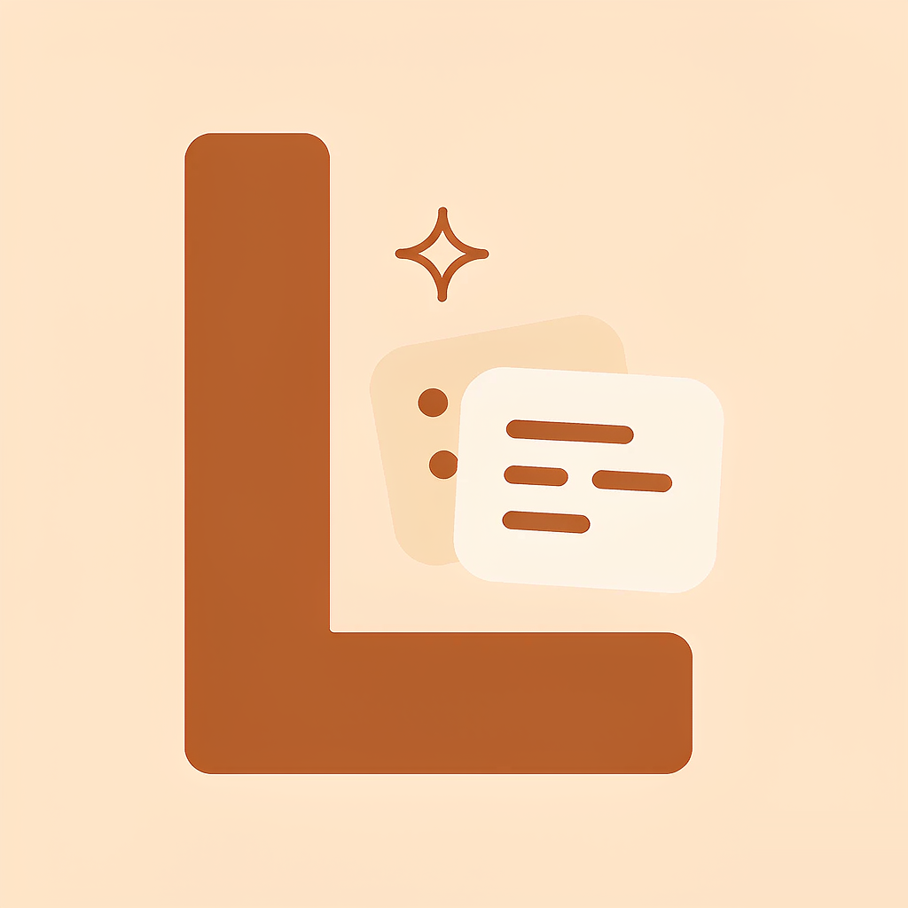
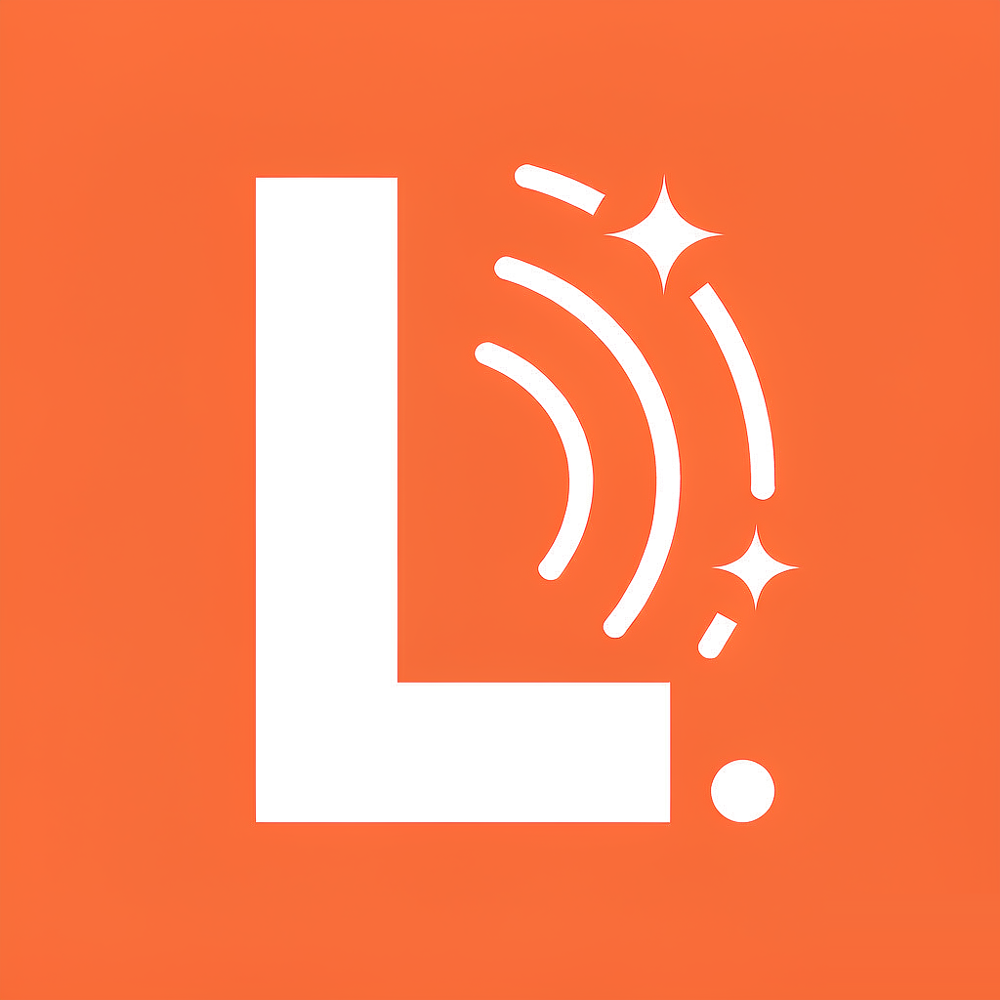
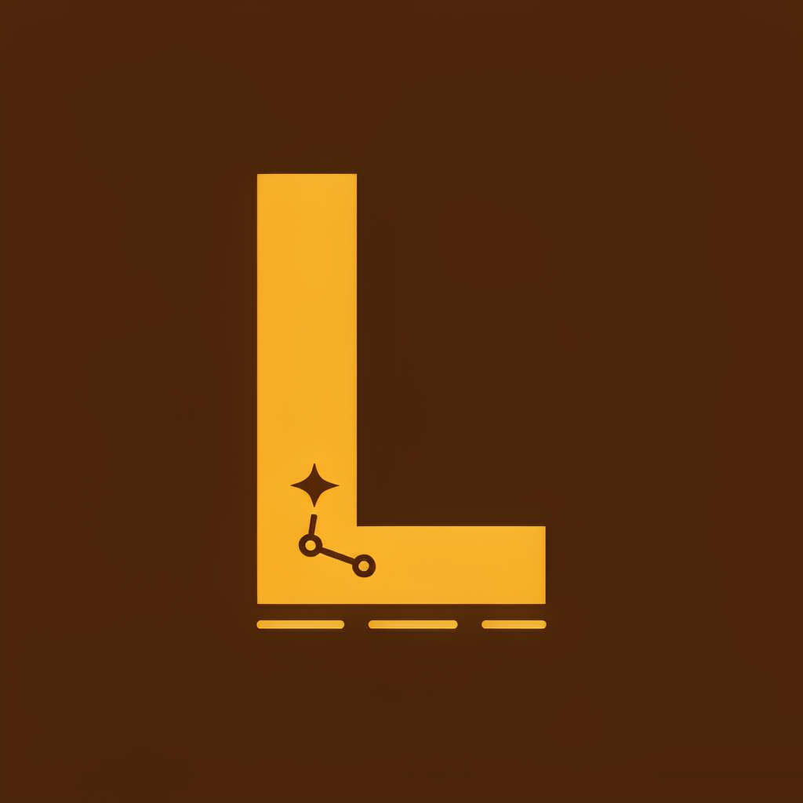

Langly · AI 主题图标候选
第三批 4 个方案 · 1024 × 1024 · 暖色 + 大写 L + 语言学习符号 + AI 符号，四项要求一次叠齐

I · AI 陪练对话
推荐 · 最直白#DD5E3C / #FBF6E4
奶油白 L + 深橙对话气泡（抽象文字条）+ 右上角一枚大四角星芒。一眼读懂「AI 陪你练对话」，也是四张里最干净的。
I_ai_tutor_speech_L.png

L · AI 单词卡
推荐 · 最轻快#F8DCB8 / #A4572A
圆角焦糖 L + 两张叠放单词卡 + 上方星芒，对应「AI 生成复习卡 / 间隔重复」。构图平衡、小尺寸也不糊。
L_ai_flashcards_L.png

J · AI 发音点评
备选 · 略碎#FF6C3E / #FFFFFF
白色 L + 三道声波弧 + 两枚星芒，呼应语音讲解与发音反馈。缺点：星芒把声波切得有点碎。已按此风格出明亮精修版 M–Q。
J_ai_pronunciation_L.png

K · AI 知识联想
备选 · 偏弱#5A2E1B / #F2B24A
暖金 L 拐角里一个节点连线网络 + 星芒，呼应知识联想网络。缺点：节点偏小，下方三条线看着像等号，语言感弱。
K_ai_knowledge_graph_L.png
交付说明
- AI 元素统一用四角星芒（业界通用 AI 符号）与节点连线，避开机器人脸、芯片、电路这些俗套；四张都保留了 L 和语言学习符号。
- 气泡 / 卡片 / 书页里的「文字」一律用抽象线条，避免出现 AI 生成乱码字符。
- 四张均为 1024 × 1024 不透明 PNG、直角方形，已去除工具水印，原件归档在 original/（ai_ 前缀）。
- 四批共 17 案一次看全：总览页 · 第四批（J 明亮精修 M–Q） · 第二批（语言主题） · 第一批（纯 L 造型）。